Rota Inova UEMG 2026 · Entrega 3 de 4 · Workshop de Prototipagem (21/09/2026)
Prototipagem: o protótipo funcional da AgroParts
O protótipo está publicado em agroparts.pages.dev. Ele identifica rolamentos rígidos de esferas das séries 60, 62 e 63 a partir de código, descrição livre ou foto de etiqueta. Ele roda sobre dados públicos e verdadeiros do CATMAT e de compras do Compras.gov.br, não sobre cadastro de cliente.
- Equipe
- AgroParts · Camada inteligente de interoperabilidade para peças agroindustriais
- Desafio
- AGR08 · Eficiência na Gestão de Peças
- Integrantes
- Allana Eduarda Braga Iquegami, Gabrielle Henrique Arruda Longo, Alberto Gabriel Rodrigues Bispo, Davi de Sousa Almeida, Myke Matos dos Santos
- Curso
- Sistemas de Informação · UEMG Frutal
- Etapa
- Prototipagem
- Protótipo
- https://agroparts.pages.dev · código em github.com/shishiv/agroparts
1. O que o protótipo prova
O protótipo executa as cinco provas definidas na Entrega 2 (MVP). Cada prova usa um item real do CATMAT:
| Prova | Caso real no protótipo | Decisão |
|---|---|---|
| 1. Duplicidade exata | Os itens CATMAT 311960 e 311963 descrevem o mesmo rolamento 6318ZZ C3 | resolve mesma peça |
| 2. Falsa semelhança | O item 317388 (6211ZZ) tem 7 itens de texto parecido. Um deles, o 290385, tem folga C3 e blindagem em um lado só | recusa com o motivo |
| 3. Referência cruzada | O item 624270 publica SKF 6206 2RS1 e NSK 6206 DDU | resolve a referência; revisa a substituição |
| 4. Tradução em lote | Os 396 itens ativos do padrão descritivo CATMAT 11797 (rolamento de esfera) | contagens por série |
| 5. Revisão humana | O item 472447 declara furo de 60 mm, mas o código 6013 tem furo de 65 mm | recusa e registro da pessoa |
2. Fluxo
A interface chama uma API HTTP documentada (/api/openapi.json). A API só lê dados públicos e não grava nada. Por isso ela não tem autenticação. O registro de revisão fica no navegador e pode ser exportado em JSON.
3. Telas e o que cada tela prova
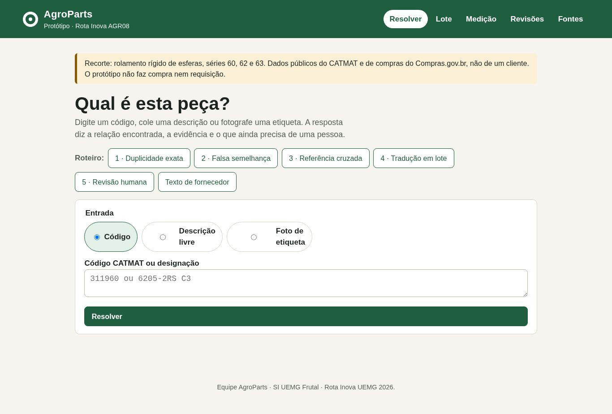
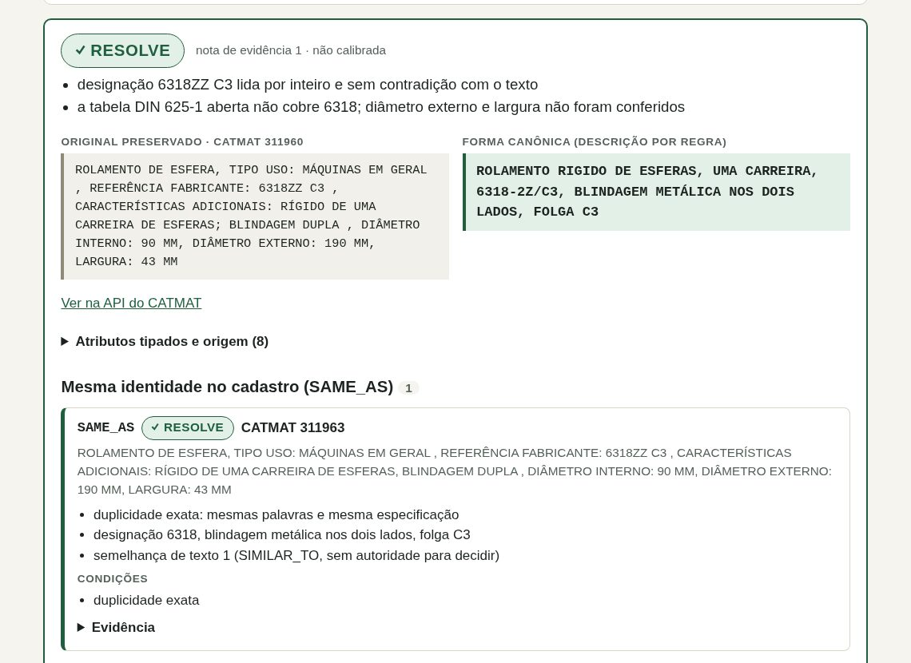
SAME_AS (mesma peça), com o motivo “mesmas palavras e mesma especificação”. A tela também declara o limite: a tabela dimensional aberta não cobre a série 6318, então diâmetro externo e largura não foram conferidos.
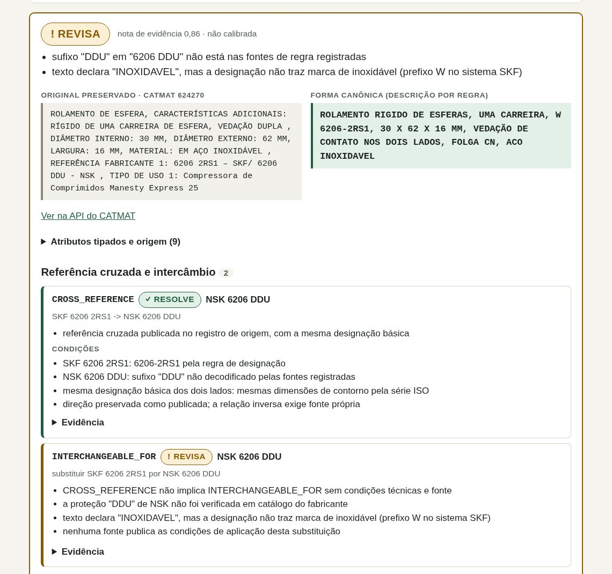
INTERCHANGEABLE_FOR) fica em revisa: o sufixo DDU não está nas fontes de regra, e o texto pede aço inoxidável que a designação não confirma.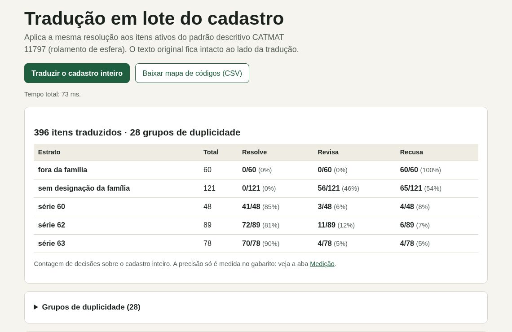
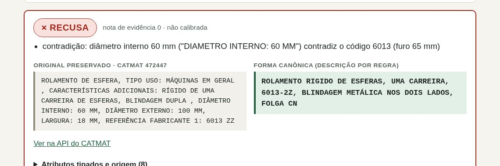
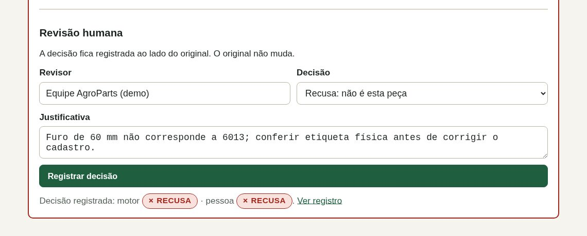
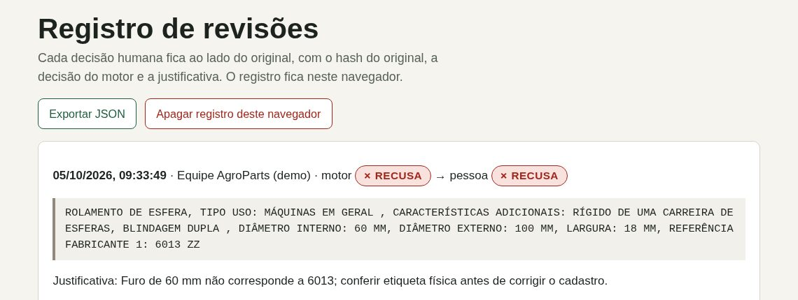
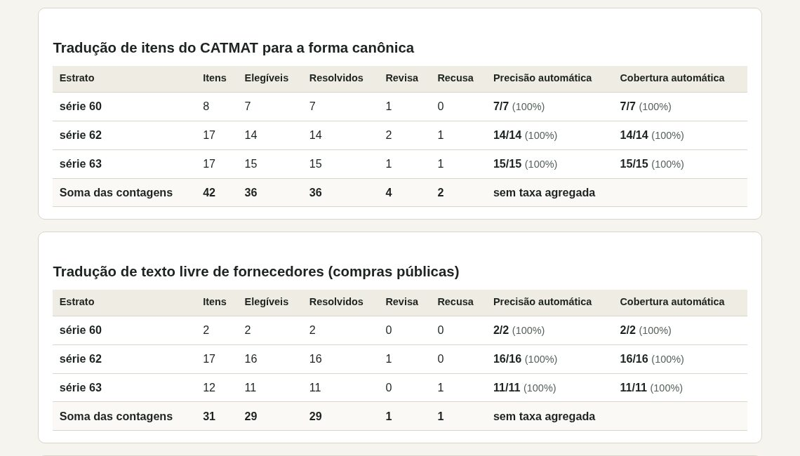
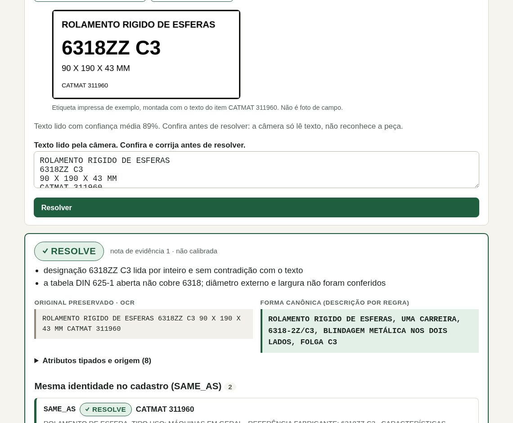
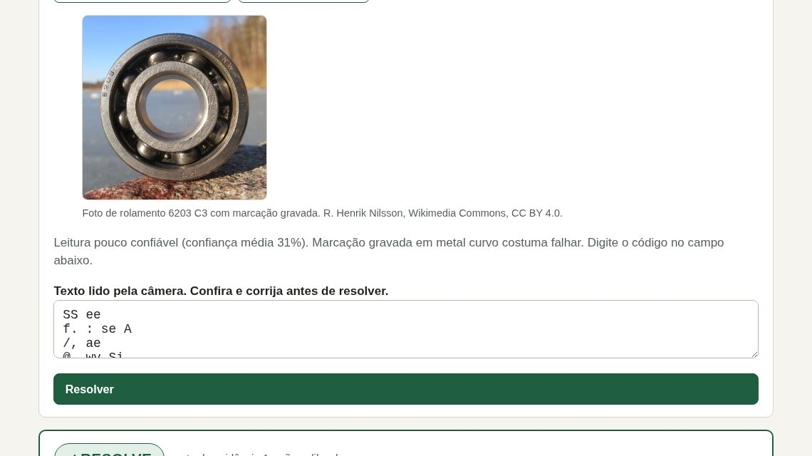
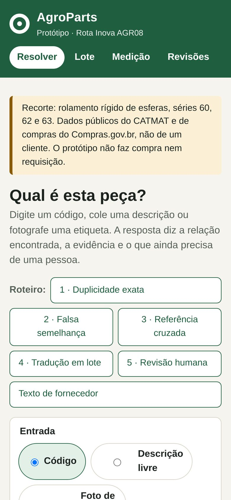
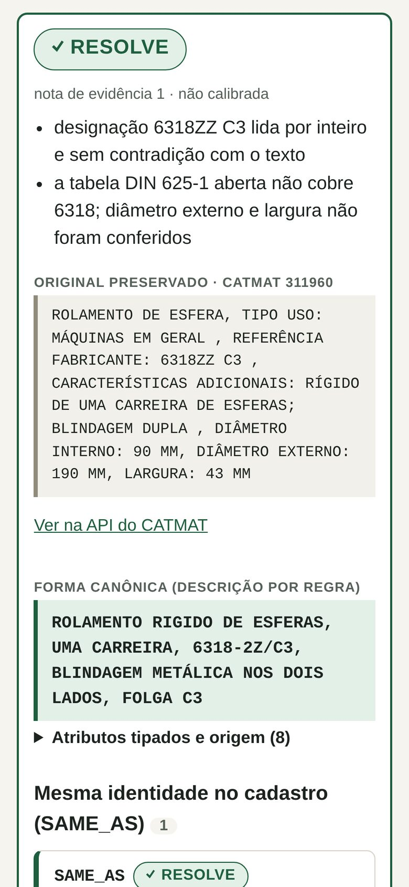
Celular (390 px). À esquerda, a tela inicial. À direita, o resultado da prova 1. A interface funciona no celular, onde a câmera tira a foto da etiqueta.
4. Números medidos
O gabarito v1 foi rotulado e congelado antes de o motor existir. Ele tem 42 itens do CATMAT, 31 textos livres de fornecedores e 140 pares de identidade. A equipe não usa uma acurácia geral única. Precisão automática é resolvidos corretos sobre resolvidos. Cobertura automática é elegíveis resolvidos sobre elegíveis.
Tradução de itens do CATMAT
| Série | Itens | Elegíveis | Resolve | Revisa | Recusa | Precisão automática | Cobertura automática |
|---|---|---|---|---|---|---|---|
| 60 | 8 | 7 | 7 | 1 | 0 | 7/7 (100%) | 7/7 (100%) |
| 62 | 17 | 14 | 14 | 2 | 1 | 14/14 (100%) | 14/14 (100%) |
| 63 | 17 | 15 | 15 | 1 | 1 | 15/15 (100%) | 15/15 (100%) |
Tradução de texto livre de fornecedores
Os textos vêm do campo “marca” de compras públicas, como o fornecedor digitou. Exemplos: BLK Modelo 6205-2rs e 6206 ZZC3.
| Série | Itens | Elegíveis | Resolve | Revisa | Recusa | Precisão automática | Cobertura automática |
|---|---|---|---|---|---|---|---|
| 60 | 2 | 2 | 2 | 0 | 0 | 2/2 (100%) | 2/2 (100%) |
| 62 | 17 | 16 | 16 | 1 | 0 | 16/16 (100%) | 16/16 (100%) |
| 63 | 12 | 11 | 11 | 0 | 1 | 11/11 (100%) | 11/11 (100%) |
Identidade entre códigos (mesma peça)
| Série | Pares | Verdadeiros | Falsos | Indeterminados | Precisão | Recall | Falsos recusados |
|---|---|---|---|---|---|---|---|
| 60 | 12 | 0 | 9 | 3 | não se aplica | não se aplica | 9/9 (100%) |
| 62 | 64 | 7 | 39 | 18 | 7/7 (100%) | 7/7 (100%) | 39/39 (100%) |
| 63 | 64 | 7 | 42 | 15 | 7/7 (100%) | 7/7 (100%) | 42/42 (100%) |
Um par é indeterminado quando um dos dois itens não é elegível no gabarito. Esse par fica fora da precisão e do recall.
Referência cruzada e lote
- Referência cruzada recuperada com fonte: 1/1. Com um único caso, o número não sustenta taxa.
- Substituições resolvidas automaticamente: 0. O contrato do produto exige 0.
- Lote do padrão 11797 inteiro, sem gabarito: 396 itens ativos e 28 grupos de duplicidade. Na série 60, 41/48 itens resolveram. Na série 62, 72/89. Na série 63, 70/78. Fora da família, 60/60 itens foram recusados. Essas contagens não medem precisão, porque só o gabarito tem rótulo.
- Testes automatizados: 29 testes do motor e da API. Todos passaram em 05/10/2026.
Como ler os 100%. Os 100% mostram que o motor aplica as regras sem errar nos textos reais do gabarito. Eles não mostram que as regras acertam a peça física. O gabarito é pequeno, e a nota de evidência ainda não está calibrada. Na primeira execução, o motor errou 6 pares de identidade por um defeito na leitura de “6206-2Z”. O defeito foi corrigido sem mudar rótulos nem limites. A equipe ainda precisa revisar os rótulos do gabarito, que foram escritos pela mesma origem que escreveu o motor.
5. Limites do protótipo
- Dados públicos. O protótipo não prova valor para uma usina. Essa prova exige uma amostra real e autorizada de cadastro.
- Sem catálogo de fabricante. Os termos da SKF e da Timken não permitem repassar seus dados a terceiros sem autorização escrita. O protótipo usa só a regra pública de designação da SKF, reimplementada, e a tabela aberta DIN 625-1 do projeto BOLTS. Essa tabela cobre só parte das séries.
- Foto não identifica peça. A câmera lê texto de etiqueta. A pessoa confere o texto lido.
- Sem ERP e sem compra. O protótipo não escreve em ERP, não gera requisição e não compra. Ele também não infere compatibilidade com máquina.
6. Como rodar e conferir
- Abra https://agroparts.pages.dev no computador ou no celular.
- Clique nos botões do roteiro, de 1 a 5.
- Para rodar sem internet, siga o README do repositório:
bun installe depoisbun run demo. - Para refazer a medição, rode
bun run medir. O resultado regravadocs/medicao/gabarito-v1.md.
Fontes
- Capturas feitas em 05/10/2026 com Chrome, desktop (1366 px) e celular (390 px). Recortes em
docs/rota-inova/img/. - Números:
docs/medicao/gabarito-v1.md, gerado porbun run medircom as regras v1 de 05/10/2026. - Fontes e licenças dos dados:
docs/pesquisa/fontes-do-prototipo.md. Pilha: ADR 0021 emdocs/decisoes/. - CATMAT e compras públicas: API de Dados Abertos do Compras.gov.br, consulta de 05/10/2026. Decreto 8.777/2016, art. 4.